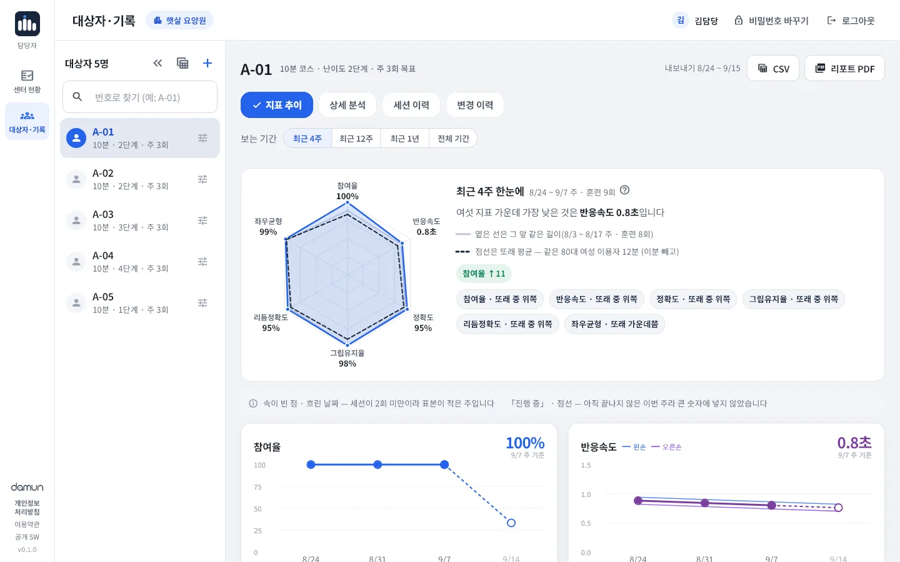

손과 머리를 함께 움직이는 활동을 즐기고 싶은 어르신
놀이처럼 즐겁게
음악·빛·진동에 맞춰 누르는 활동입니다. 반복해도 즐길 수 있도록 만들었습니다.
혼자서도 따라 하기 쉽게
할 일을 소리로 읽어 드리고, 큰 글씨로 한 번에 하나만 보여 드립니다. 언제든 「도움이 필요해요」를 누를 수 있습니다.
바로 보이는 내 기록
활동이 끝나면 몇 개 맞았는지 바로 보여 드립니다.

FOR CENTERS · 센터용
복지관 · 경로당 · 주·야간보호센터 · 요양시설의 프로그램 담당자를 위한 센터용 Rehaptic 안내입니다.
도입 문의 받는 중만든 곳다문(DAMUN)회사 소개
WHY REHAPTIC
프로그램을 운영하는 분들이 겪는 어려움을 세 가지로 나누어, 하나씩 풀도록 만들었습니다.
진행해 줄 사람이 없으면 훈련이 멈추기 쉽습니다.
훈련 시간과 난이도를 고르면 설명부터 연습까지 앱이 소리와 큰 글씨로 안내합니다.
같은 활동을 같은 방식으로 반복하면 오래 이어가기 어렵습니다.
음악·빛·진동에 맞춰 누르는 활동입니다. 수행 기록을 바탕으로 다음 난이도를 제안합니다.
활동한 내용이 남지 않으면 돌아보고 이어가기 어렵습니다.
참여 기록이 관리자 웹에 모여 주간 추이와 PDF 리포트로 나옵니다.
THE SYSTEM
그립, 태블릿 앱, 관리자 웹이 한 세트입니다.

왼손·오른손 한 쌍. 손가락마다 따로 눌리는 레버가 있고, 신호는 진동과 화면으로 알려 줍니다.

안드로이드 태블릿에서 세 가지 활동과 결과 화면을 보여 줍니다.

인터넷 브라우저로 접속해 기록·리포트·계정을 관리합니다.
HOW IT WORKS
하루 훈련은 네 단계입니다.
담당자가 태블릿에서 대상자와 훈련 시간을 고릅니다.
여덟 손가락을 하나씩 눌러 그림과 번호를 확인합니다.
할 일을 소리로 읽어 드리고, 연습한 뒤에 시작합니다.
세 가지 활동을 마치면 결과를 보여 드리고 기록을 남깁니다.
손과 머리를 함께 움직이는 활동을 즐기고 싶은 어르신
음악·빛·진동에 맞춰 누르는 활동입니다. 반복해도 즐길 수 있도록 만들었습니다.
할 일을 소리로 읽어 드리고, 큰 글씨로 한 번에 하나만 보여 드립니다. 언제든 「도움이 필요해요」를 누를 수 있습니다.
활동이 끝나면 몇 개 맞았는지 바로 보여 드립니다.
복지관·경로당·주·야간보호센터와 요양시설의 프로그램 담당자
시간과 난이도만 고르면 설명부터 연습까지 앱이 안내합니다.
참여 기록이 관리자 웹에 모여 주간 추이와 PDF 리포트로 나옵니다. 인터넷이 잠시 끊겨도 태블릿에 모아 두었다가 보냅니다.
ADMIN WEB · RECORDS
이번 주 참여 현황부터 대상자별 기록까지, 인터넷 브라우저 하나로 확인합니다.
수행 기록 안내이 값은 훈련을 어떻게 수행했는지에 대한 기록입니다. 인지기능이나 질환 상태에 대한 진단이 아니며, 의학적 판단은 담당 의료인의 몫입니다.

ADOPTION
기관별 운영 방식과 제공 기능은 제품 사양에 맞춰 협의합니다.
센터 규모와 운영 방식을 듣고 필요한 구성을 함께 살펴봅니다.
그립과 태블릿 수, 운영 방식, 제공 기능을 협의합니다.
설치하는 날 담당자께 30분 교육을 드립니다.
담당자가 태블릿으로 프로그램을 진행하고, 기록은 관리자 웹에 모입니다.
FAQ
복지관, 경로당, 주·야간보호센터, 요양시설의 프로그램 담당자가 어르신과 함께 쓰도록 만들었습니다. 손과 머리를 함께 움직이는 활동을 즐기고 싶은 어르신이 사용하는 분입니다.
햅틱 그립 한 쌍(왼손·오른손), 그립과 짝지은 안드로이드 태블릿 한 대, 그리고 관리자 웹을 열 인터넷 브라우저가 필요합니다.
인터넷이 잠시 끊겨도 태블릿이 기록을 모아 두었다가 한 시간마다 저절로 다시 보냅니다.
이용자는 이름 대신 센터가 정한 식별 번호(예: A-01)로 등록합니다. 태블릿에도 서버에도 번호만 남습니다. 번호와 어르신을 맞춘 표는 센터 업무용 PC 한 곳에서만 보관하도록 엑셀 양식을 드립니다.
생년월일은 받지 않고, 또래와 비교할 때는 연령대와 성별만 사용합니다.
어르신마다 「한 손으로 하시는 분」과 「훈련에서 뺄 손가락」을 설정할 수 있습니다. 설정은 그분에게만 적용되고 다음 분에게는 남지 않습니다.
훈련 시간과 1~5단계 난이도를 고를 수 있고, 리듬 놀이의 음악 빠르기는 느리게·빠르게 중에서 고릅니다. 관리자 웹은 수행 기록을 바탕으로 난이도를 올려 볼 만한 분을 알려 주며, 정하는 것은 담당자입니다.
담당자 설정에서 소리 크기와 안내 말소리, 누를 때 진동을 줄이거나 끌 수 있습니다.
훈련 중 어르신이 누를 수 있는 화면 단추는 「도움이 필요해요」뿐입니다. 훈련을 끝내거나 설정을 바꾸는 일은 담당자가 합니다.
다문에 알려 주시면 태블릿에 남은 기록과 서버의 기록을 삭제합니다.
Rehaptic은 의료기기가 아니며 질병을 진단·치료·예방하지 않습니다. 관리자 웹의 값은 훈련을 어떻게 수행했는지에 대한 기록이고, 의학적 판단은 담당 의료인의 몫입니다.
기관 규모와 구성에 맞춰 협의합니다. info@damun.asia로 문의해 주세요.
CONTACT
기관별 운영 방식과 제공 기능은 제품 사양에 맞춰 협의합니다. 편하게 문의해 주세요.